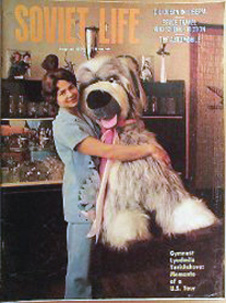

Ludmilla Turischeva (USSR)
1972 Olympic AA Champion
1970 and 1974
World AA Champion
1971 and 1973 European AA Champion

Medal Total Olympic
Games:
4 Gold, 3 Silver, 2
Bronze |
"The main thing for a gymnast is total concentration while competing. At such moments one has to put everything else behind. I know that other gymnasts can do so with a smile but I can't. And I don't even try to."
Turischeva was born on October 7, 1952, in Grozny, USSR. Ludmila began gymnastics in 1962 under coach Kim Efimovich Wasserman. Two years later, Wasserman turned her over to Vladislav Rastorotsky, who coached her for the remainder of her career. Although her teammate Olga Korbut was more popular with the public, Turischeva was the top gymnast in the early 1970s. For her many sports successes, she was awarded the Order of the Red Banner of Labor and the Order of Lenin. After retiring following the 1976 Olympics, she married champion Olympic sprinter Valery Borzov. Their daughter Tatiana was born in 1978. A graduate of the Rostov Pedagogical Institute (1974) and the Lesgaft State Institute of Physical Culture (1986), Turischeva is head of the Dynamo gymnastics club in Kiev.
Competition Results
1966
RSFSR-GDR Dual Meet: 2nd Team, 2nd AA
1967
RSFSR Championships: 2nd VT, 2nd FX
USSR Cup: 1st AA
USSR Spartakiade: 5th AA
1968
Jr. Friendship Tournament (Druzhba): 1st Team, 1st AA, 1st
UB, 1st FX, 3rd B, 4th V
Olympics: 1st Team, 24th AA
1969
European Championships: 3rd AA, 3rd UB,
3rd FX, 4th V, 4th B
RSFSR Championships: 1st AA, 1st B, 1st FX
USSR Championships: 3rd AA
1970
Dinamo Championships: 1st AA, 1st B, 1st FX, 2nd
V, 2nd UB
USSR Championships: 4th AA, 1st UB, 1st FX, 5th V
USSR Cup: 3rd AA
Winnipeg International: 1st AA, 1st VT, 1st UB, 1st BB
World Championships: 1st Team, 1st AA, 1st
FX, 2nd UB, 3rd V
1971
Chunichi Cup: 2nd AA
European Championships: 1st AA, 1st V, 1st
FX, 2nd UB, 2nd B
RSFSR Championships: 1st V, 1st UB, 1st B, 1st FX
USSR Spartakiade: 4th AA
1972
Chunichi Cup: 3rd AA
Olympics: 1st Team, 1st AA, 2nd FX,
3rd V, 4th UB, 5th B
USSR Championships: 1st AA
USSR Cup: 2nd AA, 1st V, 1st UB
USSR-FRG-CAN: 1st Team, 3rd AA
USSR-HUN: 1st Team, 1st AA
1973
European Championships: 1st AA, 1st V,
1st UB, 1st B, 1st FX
1974
USSR Championships: 1st AA
World Championships: 1st Team, 1st AA, 1st
B, 1st FX, 2nd V, 3rd UB
1975
Chunichi Cup: 2nd AA
European Championships: 4th AA, 3rd FX, 5th V
USSR Spartakiade: 3rd AA
World Cup: 1st AA, 1st V, 1st UB,
1st B, 1st FX
1976
Olympics: 1st Team, 3rd AA, 2nd
V, 2nd FX, 4th B
USSR Cup: 2nd AA
This page was created on February 12, 2000
and was last updated on March 24, 2026.
© Gymn Forum